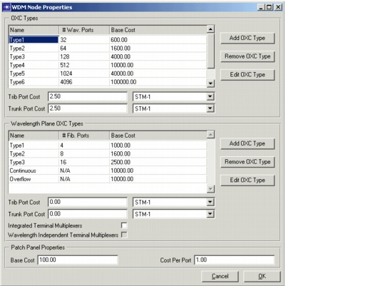

Creating a Baseline Scenario > Equipment Properties > WDM Node Equipment Properties
WDM Node Equipment Properties
You can use the "WDM Node Equipment" dialog box to add, remove and edit non-blocking OXC types and wavelength plane OXC types (see Optical Nodes: WP-OXC for descriptions of these types).
Figure 3-30 WDM Node Equipment Dialog Box

You can add as many OXC types as you want. By default, two types are always present: the Continuous OXC type (when you are using discrete node types, as described in The Node Model) and the Overflow type (when you are using discrete node types and the largest specified OXC type is not large enough).
Procedure 3-9 describes how to specify the OXC types next to the line systems. You should always perform this procedure, especially when you are working with discrete node types.
Procedure 3-9 Specifying OXC Types
- In the WDM Equipment Properties dialog box, select the OXC type in the "OXC Types" table.
- Click the Edit OXC Type button.
The OXC Type Properties dialog box appears.
Figure 3-31 OXC Type Properties Dialog Box
- Edit the OXC type. Specify the Name, the number of (bi-directional) wavelength ports (# Ports), and the cost of the OXC switching matrix (Cost). Then click OK to return to the WDM Equipment Properties dialog box.
- Specify a bit rate and a bit-rate-dependent cost per OXC tributary (Trib Port Cost) and trunk port (Trunk Port Cost). These values are the same for all OXC types.
End of Procedure 3-9
Discrete WP-OXCs are specified in terms of fiber ports. An OXC with eight fiber ports has eight wavelength ports per wavelength plane.
Procedure 3-10 Specifying Wavelength Plane OXC types
- In the WDM Node Properties dialog box, select the OXC type in the Wavelength Plane OXC Types table.
- Click the Edit OXC Type button.
The OXC Type Properties dialog box appears.
- Edit the OXC type. Specify the Name, the number of (bi-directional) fiber ports (# Ports), and the cost of the OXC switching matrix (Cost). Then click OK to return to the WDM Node Properties dialog box.
- Specify a bit rate and a bit rate-dependent cost per OXC tributary (Trib Port Cost) and trunk port (Trunk Port Cost). These values are the same for all WP-OXC types.
- You can set the Integrated Terminal Multiplexers checkbox to integrate the WDM terminal multiplexers in the WP-OXC and thus create virtual fiber ports.The fibers connect to the WP-OXC directly instead of demultiplexing the wavelengths using a terminal multiplexer.
- If this checkbox is enabled, the WP-OXC uses fiber ports and the trunk fibers can be directly interconnected to the WP-OXC. In this case, external terminal multiplexers are required at the tributary side to multiplex the add/drop wavelengths towards the tributary fibers.
- If this checkbox is disabled, the WP-OXC uses wavelength ports, and external terminal multiplexers are used to multiplex/demultiplex the wavelengths from the trunk fibers to the WP-OXC ports.
- If there are integrated terminal multiplexers, you can set the Wavelength Independent Terminal Multiplexers checkbox to specify that the terminal multiplexer inputs at the WP-OXC tributary side are wavelength-independent.
- If this checkbox is enabled, each port on the terminal multiplexer can take any wavelength as input. Combined with tunable transponders, this enables the node to use any port on the terminal multiplexer at any wavelength with the constraint that each wavelength can be used only once on the terminal multiplexer.
- If this checkbox is disabled, the input wavelengths of the terminal multiplexers are fixed, and each port on the terminal multiplexer uses a fixed-wavelength transponder.
End of Procedure 3-10
Specifying Patch Panel Properties
Some traffic can be hardwired. In this case, a patch panel is used in the node and the base cost and cost per port of the patch panel must be counted. Open the WDM Node Properties dialog box; in the Path Panel Properties section, specify the Base Cost and Cost per Port parameters.
| Home © 1987-2007 OPNET Technologies, Inc. All Rights Reserved. This software may be covered by one or more U.S. Patents. See complete patent notice in the Legal Notices section. OPNET Support Center |